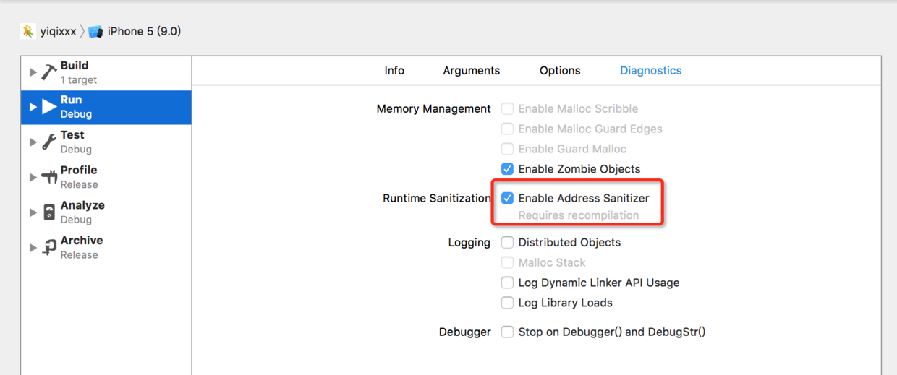
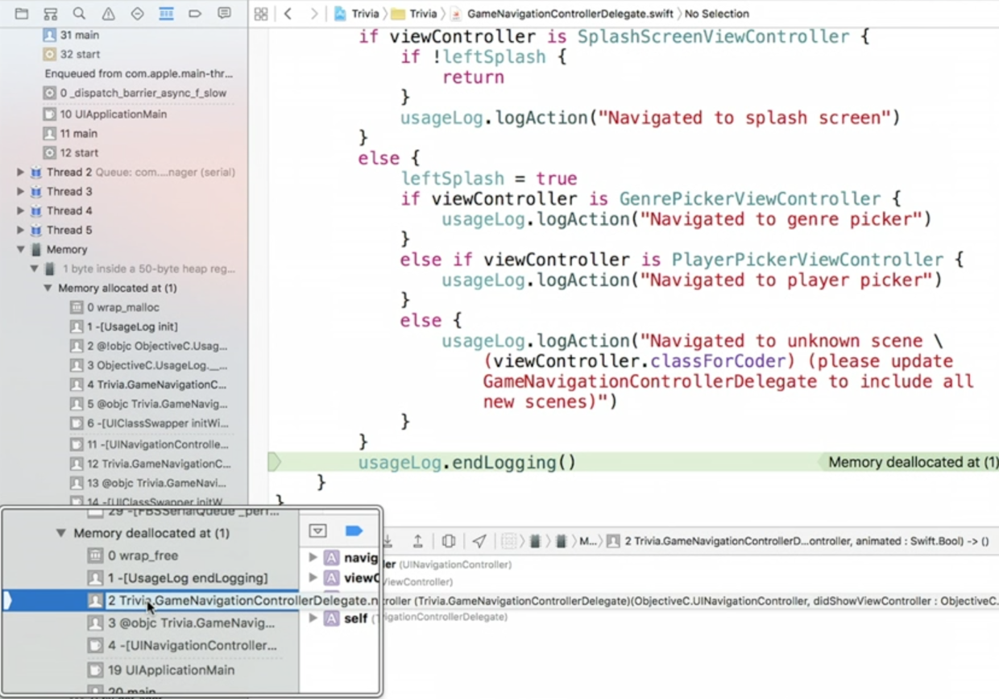
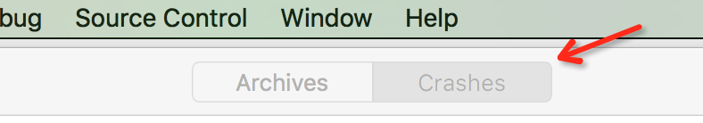
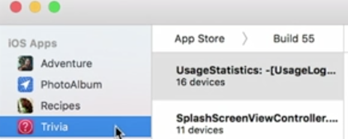
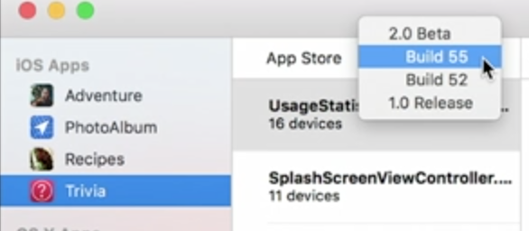
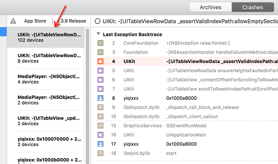
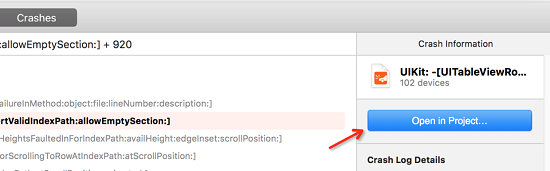
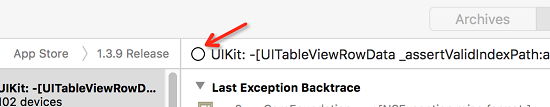
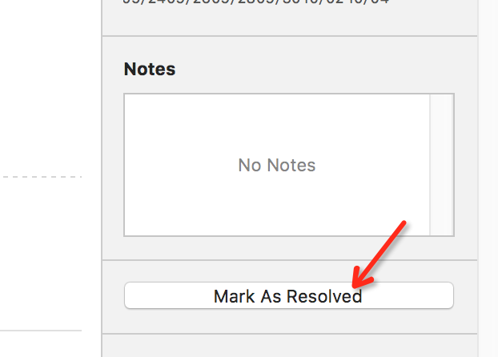

本文是投稿文章，作者：卓同学
1.Address Sanitizer: 妈妈再也不用担心 EXC_BAD_ACCESS?
EXC_BAD_ACCESS一直是很多开发者的噩梦，因为这个错误很不直观，出现后往往要花很长时间才能定位到错误。苹果这次带来了革命性的提升。
在项目的Scheme中Diagnostics下，选中enable address sanitizer（注意选中后Xcode会重新编译整个项目）。

这样设置后，如果再出现类似的错误会有更详细的错误信息提示，甚至会有内存使用情况的展示。

2.发布后的crash跟踪，轻松定位崩溃代码
在升级iOS9后，苹果会询问用户是否同意收集应用崩溃报告。这样在itunes connect的后台统计中就可以看到一些收集到的数据（通常会有相当一部分用户不同意，所以只是部分数据）。
2.1查看崩溃统计信息
在connect后台中选择app分析
进入分析页面后，tab中选择“指标”
然后在左侧的菜单中选择“崩溃”
这样就可以看到苹果收集到的崩溃统计，一定要注意这里只是一部分的数据，举例来说如果你看到的崩溃是10次，但是可能苹果只收集了20%的用户信息。所以你可以大概估计应该是10*5=50次崩溃。
2.2在Xcode中查看具体崩溃信息
在xcode中菜单的window下选择organizer,在打开的窗口中选择Crashes，这样Xcode会开始下载相关的崩溃信息到本地中（网络环境不好时可能要等待一些时间）。

organizer窗口
可以在左侧选择你要查看崩溃信息的发布版本


在崩溃信息这一栏苹果会按照崩溃数量排序，将崩溃数量最多的排在最前。右侧的详细信息会显示是崩溃时的调用堆栈，可以看到是哪行代码导致的崩溃。

选中要解决的崩溃后，可以在窗口右侧选择open in project。

神奇的事情发生了！！！在打开的项目中，会直接定位到崩溃的那行代码。这大大提高了调试的效率！我已经的迫不及待要和开发安卓的同事分享这份喜悦了。
注意！注意！
因为之前的项目发布时没有用xcode7打包，所以猜测符号表可能没有上传到苹果服务器，所以以前的项目可能不能直接显示是哪行代码，而是显示调用时出错的内存地址。不过下个版本你用xcode发布后就可以正常看到啦。
在解决完这个crash后可以标记为已经解决。有两个地方可以标记。


相关链接：
所以没有升级xcode7的同学赶紧升吧。O(∩_∩)O~